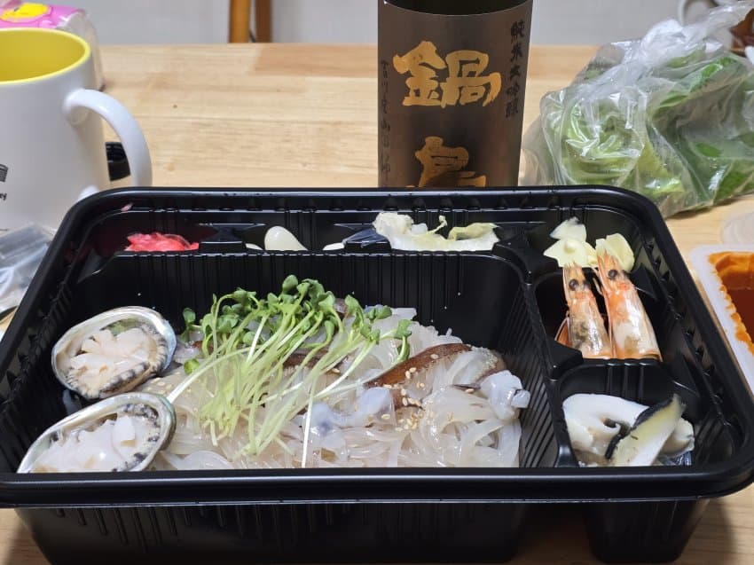

							<p style="text-align:left;"></p><div></div><p></p><div><div> 나베시마 준다긴 요카와야마다니시키</div><br><div> 파인애플, 깔끔한 백주같은 향</div><div> 미미한 탄산감, 약간의 시트러스, 복숭아, 미네랄, 자두, 약간 알콜성 드라이함</div><br><div> 온도를 조금 올려보면 감칠맛도 살짝 느껴지면서 알콜감이 올라온다</div><br><div> 바디감 나쁘지 않고 복합성 어느정도 챙겼고 술맛 좀 나고 페어링하기 꽤 괜찮다</div><div> 따뜻한 국물이랑 먹으면 더 좋을듯?</div><br><div> 히이레라 킵햇다가 주말에 마저 마실듯</div></div>							
							